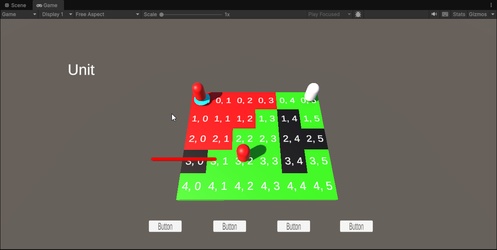
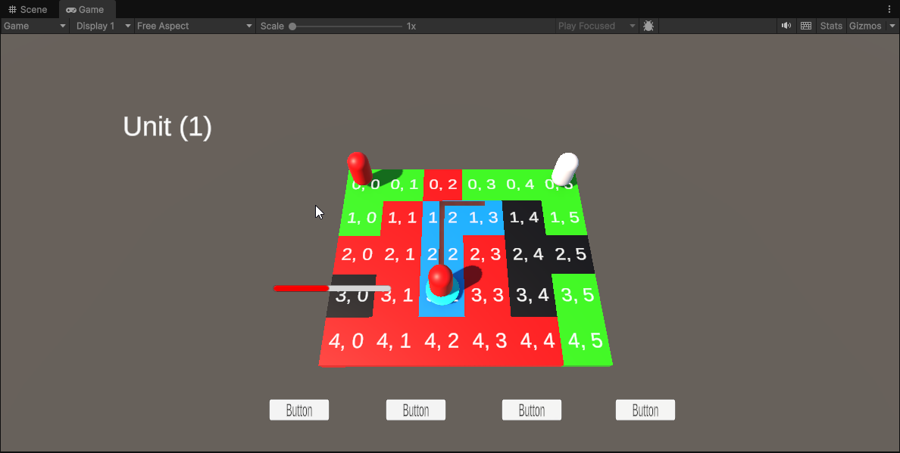

Indie Project
Indie Project
Turn Based Tactics Game (Updated 28/4/28)

Grid Movment and term manager
Grid system was implemenening allowing for differnt sizes of maps Movment carried out by units currently use Breath First search to allow unit to move around the grid, the grid tiles have differnt states that they can be in, etheir walkable, blocked or occuipied, occuipied and blocked tiles mean units cant move to these tiles and will also move around them to get to their target tile. A unit manager was created to allow for easy addition of units. The turn manager sets the order of turns based of unit initiative, similar to DnD. Visual intication where added to show the player the movment range of the selected unit and to show the path the unit will take to get to the target destination

Player and AI Units(work In progress)
Implemented Breath first search as a base for unit and ai movement this will be changed in to A* in a later update. The ai have been implemented with basic functionality, when a AI unit gets its turn it will check if it is in cover and can shoot the player unit if yes it stays where it is and shoots the player unit with the highest hit chance, if the ai is in cover and can't shoot the player the AI unit will move to cover where it can, if the ai cant make it to cover that turn but can shoot the player then it will. I have started implementation of a patrol mode for AI units will patrol in the general direaction of the player, Similar to how the AI in X-com 2 patrol when the player is hidden

Camera Controller
Camera can be controlled by using W,A,S,D to move the camera around the map, using E,Q to rotate the camera left and right, the player can also use the mouse to drag the camera around, while left clicking the camera can be rotated left and right and also tilt the camera up and down.

UI
currently have place holder buttons for player unit actions Unit health appears beside the unit and will always face the place and will make sure it not clipping with game opjects

Analytics